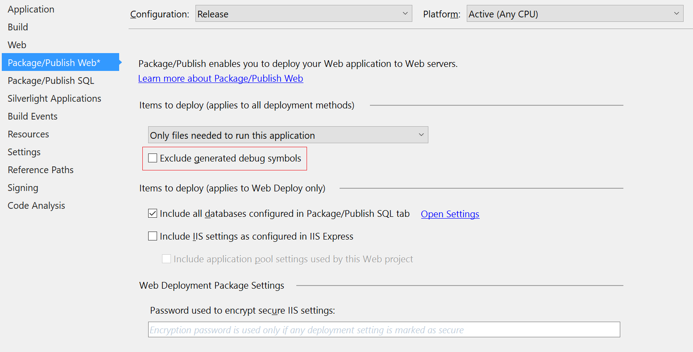
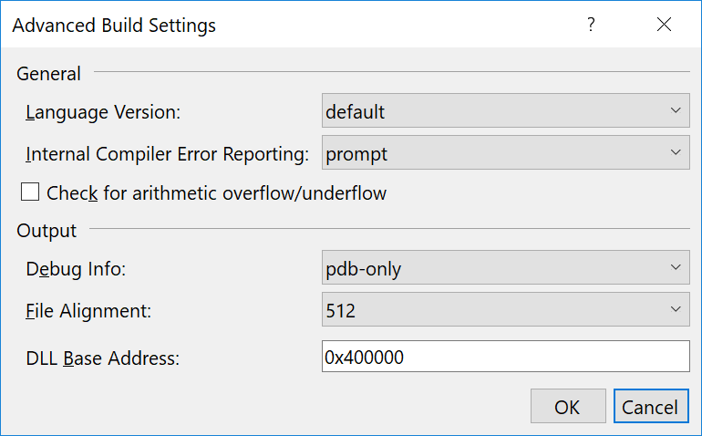

Include filename and line number in stack traces
When deploying your application to the test and production environment, you normally want to use the Release configuration. When doing so, your code is optimized, web.config transformation is running and a few additional things. But, part of running on a Release build is, that you lose the ability to see filenames and line numbers in the stack traces produced by your system.
.NET offer the concept of PDB files, which is automatically generated when building your code. The PDB file contains information for the debugger to work, like which file to look up when a breakpoint is reached in your code. Unless you have changed the default settings inside Visual Studio, both the Debug and Release configuration generates a PDB file.
So, if both Debug and Release produces a PDB file, why does Debug builds include file name and line number in stack traces, while the Release build doesn't? The reason is most often caused by the fact that PDB files aren't published as part of the deployment. To do so, right click your project in Visual Studio and Select Properties. Click the Package/Publish Web tab and make sure that the Release configuration is selected in the dropdown. Next, remove the check in Exclude generated debug symbols:

Also, make sure that the PDB file is generated as part of Release builds. Select the Build tab and click Advanced.... In Debug Info you want to make sure that either pdb-only or full is selected (pdb-only being the default):

On your next deployment, PDB files are published as part of the build.
Depending on who you talk to, deploying PDB files as part of your build may be considered a hack. Since PDB file can contain sensitive information about your implementation, publishing these files should only be done, if you have full control of the environment you are deploying to. When releasing software to external users/customers, you don't want to include your PDB files. In this case, you should store the PDB files internally, in a symbol server or similar.
This article was brought to you by the elmah.io team. elmah.io is the best error management system for .NET web applications. We monitor your website, alert you when errors start happening and help you fix errors fast.
See how we can help you monitor your website for crashes Monitor your website